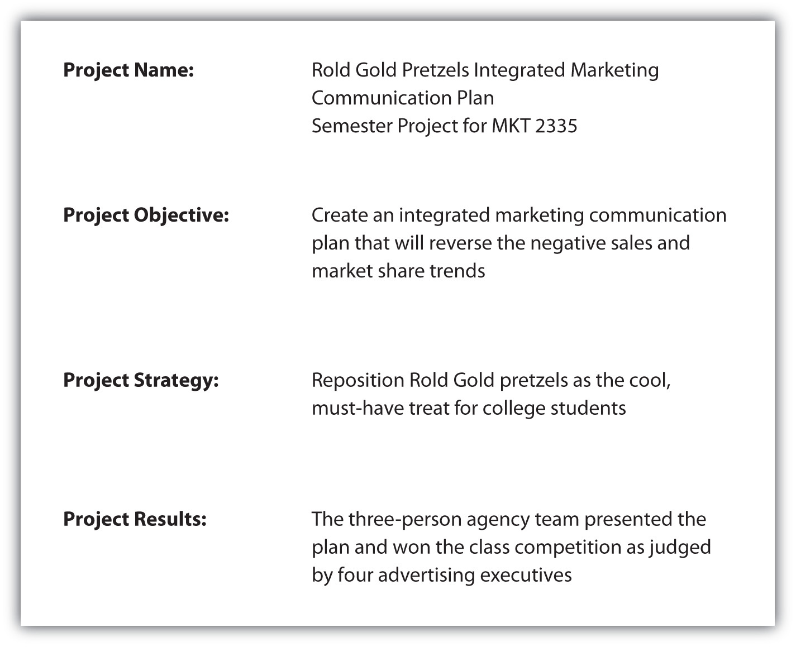

You can see that FAB is a powerful way to build an emotional connection with a customer. It is also an excellent way to stand out to a prospective employer in an interview. You’ll learn more about the interviewing process in the Selling U section of Chapter 10 "The Presentation: The Power of Solving Problems", but now it’s a good idea to do some advance preparation.
You’ve already done a lot of work that will serve you well as you network and interview—you’ve identified your brand positioning points in the Selling U section of Chapter 1 "The Power to Get What You Want in Life", put them to work in your résumé and cover letter in Chapter 2 "The Power to Choose Your Path: Careers in Sales", and developed your elevator pitch in Chapter 5 "The Power of Effective Communication". All these activities help you bring your personal FAB (feature, advantage, benefit) message into focus. Your FAB message will help you tell the details about your brand and will help you tell your “stories” about your experience and accomplishments during your interviews.
If getting the job or internship you want were only about the facts, you would only need to present your résumé on a job interview. But prospective employers are looking for that “certain something,” an emotional connection that helps them know that you are the one.Bryan Eisenberg, “Buying Is Not a Rational Decision,” ClickZ, November 26, 2001, http://www.clickz.com/927221 (accessed August 1, 2009). Every candidate comes into an interview trying to impress the interviewee and saying how much he wants the job. Why not stand out, show, and sell?
Think about your three brand positioning points you developed in Chapter 1 "The Power to Get What You Want in Life". Now, think about the stories that demonstrate each one in terms of FAB. Table 6.4 "Personal FAB Example" shows you some examples.
Table 6.4 Personal FAB Example
| Brand Positioning Point | Feature | Advantage | Benefit |
|---|---|---|---|
| Marketing Experience | Had an internship at an advertising agency | I worked on the Limited, Too account developing Twitter conversations with target customers. | I can help SpitFire engage its customers directly and learn about shopping preferences using social networking. |
| Customer Service Experience | Worked as a server at Olive Garden | I interacted with customers and provided excellent customer service under pressure. | I understand how to handle multiple tasks under pressure without losing my cool. |
| Leadership Experience | President of Young Entrepreneurs Club | I developed a forum for local investors to regularly hear pitches from student entrepreneurs, which led to the launch of three new products. | I understand the process it takes to turn ideas into profitable businesses, and I’m able to be the driving force behind bringing people, ideas, and money together. |
Take your FAB one step up and create a portfolioA collection of work samples from class projects, internship, volunteer projects, and any other work that demonstrates your skills. that you can show during job interviews. When you tell someone about your experience and accomplishments, that’s good, but showing them really helps you stand out in the crowd. If you are lucky enough to get an interview, capitalize on the opportunity to sell yourself. Keep in mind that most companies interview at least two or three people, and sometimes more, before they make their hiring decision.
A portfolio isn’t just for creative or advertising people; everyone should have a portfolio. It is simply a collection of samples of your work from class projects, internships, volunteer projects, and any other work that demonstrates your skills.“Job Search: Back Up Your Resume with a Portfolio,” WorkForce2.org, http://www.workforce2.org/resume-portfolio.htm (accessed August 5, 2009). Creating a portfolio is as simple as putting samples of your work in a three-ring binder. You might find it helpful to view this video about how to create a portfolio.
You probably have more samples of your work than you think. And each sample is an excellent way to show and tell your FAB. Here are some ideas about what to put in your portfolio:
Keep a Copy
Whenever you work on a class project, internship, volunteer project, or any other type of project that demonstrates your skills, keep a copy for your portfolio. The same is true when you begin working; keep copies of all your projects to continue to build your portfolio throughout your career. You never know when you will need to show samples of your work. It’s best to avoid including any confidential or proprietary information from companies or organizations.
After you gather all of your work samples, here are a few tips that will help you organize them for an effective visual story.
Figure 6.13 Sample Summary Page
As you develop your FAB and portfolio, think about the stories you want to tell about each one. Stories are much more powerful than facts. For example, “I can really appreciate what it takes to go the extra mile for a customer. When I worked at J&J Catering, they needed someone to mix the giant vats of cookie dough. Needless to say, I spent hours working with the dough, but I wanted to make it interesting, so I learned how ingredients work together, and I created a new recipe for lemon cookies that became the signature dessert of the company.”
A portfolio is a must to bring on a job interview. You might be wondering if it’s a good idea to also create an online portfolio. The answer is “yes.” Creating your own professional Web site as a way to showcase your résumé, samples of your work, awards, and letter of recommendation is a perfect way to build your brand and demonstrate to your prospective employer that you have additional technology skills.
Your online portfolio, or Web site, should include all the elements that are included in your offline portfolio. Since space is not an issue, you may want to include even more samples of your work, especially if you have writing or design samples. This is also an ideal place to include a link to your blog.
A word of caution: Your professional Web site should be exactly that—professional. That means no personal photos, comments, or casual blog posts from friends. In other words, your Facebook page is not an appropriate place for your professional Web site. Use a business-like domain name (http://www.yourname.com); if you don’t already have one, you can get one at Google or GoDaddy.com, for a minimal annual fee. The following article provides six steps to set up a domain name and your own Web site.
Six Steps to Set Up a Domain Name and Personal Web Site
Use your online portfolio as a way to sell yourself on your résumé: add your Web site address to your contact information and mention it in your cover letter.Resumemic09, “What Is a Portfolio and How Can I Use One to Get a Job?” video, July 24, 2009, http://www.youtube.com/watch?v=PrHI0m0B1l4 (accessed August 5, 2009). See résumé and cover letter samples in the Selling U section in Chapter 2 "The Power to Choose Your Path: Careers in Sales".
It’s always best to bring your portfolio to every interview, even if it’s an informational interview. In most cases, the interviewer will not ask you about your portfolio so you will have to bring it up in the conversation. The following video provides some tips about how to introduce your portfolio during an interview.
Using a Portfolio in an Interview
(click to see video)Learn how to use your portfolio to make the sale and get the job you want.
Source: Prima Civitas Foundation
Be proud of showing your work samples. The Financial Times, in reference to Peggy Klaus’ book Brag: The Art of Tooting Your Own Horn Without Blowing It, wrote, “Start bragging…if you don’t speak up for yourself, who will?”Peggy Klaus, Brag: The Art of Tooting Your Own Horn Without Blowing It (New York: Hachette Book Group, 2003), front cover. To ensure that you are getting all of your FAB points across, it’s best to rehearse how you will review your portfolio in an interview. Keep in mind that time is short so it’s best to be concise and underscore the FAB points you want your interviewer to remember. A portfolio is an excellent visual tool that makes your FAB message come alive for your prospective employer. The bottom line is, “If you walk into an interview empty-handed, you’re missing an opportunity.”“How to Create an Awesome Work Portfolio,” ManifestYourPotential.com, http://www.manifestyourpotential.com/en/work/tensteps/4preparework/howto/jobsearch/portfolio.htm (accessed August 5, 2009).
Write down your FAB using the chart below. What examples or stories can you tell about each one?
| Brand Positioning Point | Feature | Advantage | Benefit |
|---|---|---|---|